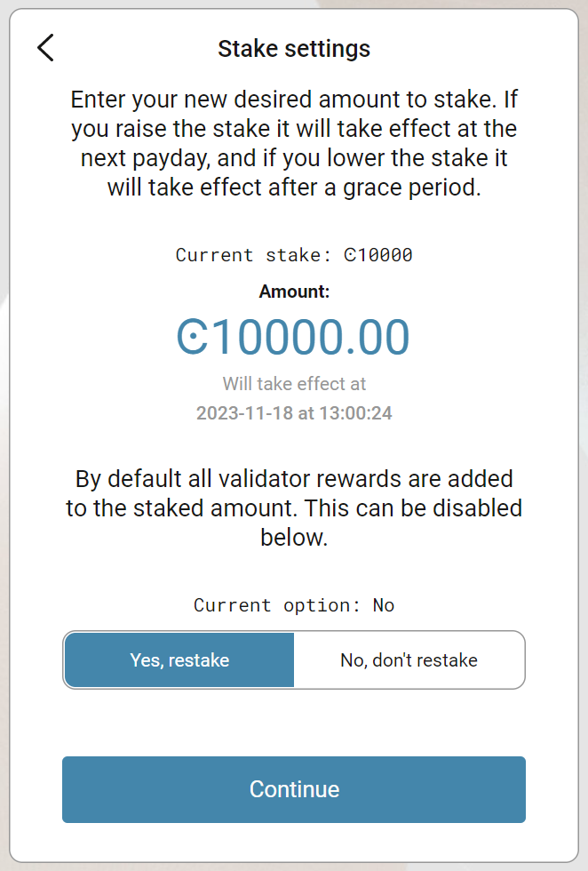

Update the staked amount#
You can change the staked amount on a baker account except during a cool-down period. If you increase the stake, the new stake takes effect at the next pay day. If the change is made in the last epoch before pay day, then the change will not occur until the following pay day. However, if you decrease the stake, there is a longer cool-down period of three weeks before the new stake is applied. During this period, youll not be able to remove the baker account or further update the stake. After the cool-down period, the amount youve decreased the stake with is returned to your disposable balance at the next pay day.
When you change the stake it can influence your chance of being selected to bake a block and receive baker rewards and of being included in the finalization committee. If you decrease the stake, you decrease your chances of baking blocks and of being included in the finalization committee. Likewise, if you increase the stake, you increase your chances of baking a blocks and of being included in the finalization committee.
Note
All transfers and transactions cost a fee, including staking and unstaking transactions. The fee is based on the set NRG for that transaction and the current exchange rate. The cost of transaction fees is stable in Euros, and therefore the price in CCD varies depending on the CCD to EUR exchange rate. The fee will always be deducted from the Balance of the account, so it is important to have some available CCDs to cover fees. A locked-for-staking balance cannot be used to pay for these transactions. You can see the fee in the transaction log.
Warning
Make sure you have enough funds in your disposable balance to cover transaction fees.
Change the staked amount (Single-signature account)#
Go to Accounts and select the account whose baker stake you want to change.
Click More options and select Baking.
Click Update baker stake.

Enter the new amount that you want to stake if you want to change the amount. Change the restaking preference if you want to change that. Click Continue.

Note
If you reduce the staked amount, a cool-down period applies. See Update baker stake for more information.
A message says Waiting for device. Please connect your Ledger. Connect the LEDGER device to the computer and enter your PIN on the LEDGER device.
Press the right button to navigate to the Concordium app, and then press both buttons to open the app. The LEDGER device says Concordium is ready. Wait for the message Ledger Nano S is ready or Ledger Nano S Plus is ready in the Desktop Wallet and select Submit.
On the LEDGER device, a message says Review transaction. Verify that the sender account is correct and navigate to the right. The LEDGER device says Update stake to and then the amount youre going to update the stake to. Navigate to the right.
The LEDGER device says Sign transaction. Press both buttons to sign the transaction. The LEDGER device says Concordium is ready.
In the Desktop Wallet, you can see that the transaction has been submitted to the chain. Select Finish.
Change the staked amount (Multi-signature account)#
Go to Multi Signature Transactions, select Make new proposal, and then select Update baker stake.
Select the account whose baker stake you want to change.
Enter the new amount that you want to stake if you want to change that. Change the restaking preference if you want to change that. Click Continue.
Set an expiry date and time for your proposal. Consider this when you set the expiry time so that the co-signers can return their signatures in time. Select Continue. You can now generate the transaction.
Generate the transaction#
There are two ways that you can generate the transaction:
Generate the transaction without signing. This option enables you to export the transaction proposal without signing it. You dont need a LEDGER device but you do need an internet connection.
Generate and sign the transaction This option requires a LEDGER device and an internet connection.
In combination, these two options enable you to distribute the responsibility of creating and signing transfers among more people. You can, for example, have one person create the proposal and another one sign the proposal. It also makes it possible for you to sign the transaction on the LEDGER device in a different location than where the proposal was created.
Generate the transaction without signing#
Verify that the Transaction details are as you intended, and then select I am sure that the proposed changes are correct.
Select Generate without signing. You can now export the proposal.
Generate and sign the transaction on the LEDGER#
If you havent connected the LEDGER device, theres a message in the Desktop Wallet saying Waiting for connection until you connect the LEDGER device. Enter your PIN code on the LEDGER device. Press the buttons above the up and down arrows to choose a digit, and then press both buttons to select the digit.
Wait for the message in the Desktop Wallet saying Open the Concordium application on your Ledger Nano S or Open the Concordium application on your Ledger Nano S Plus. On the LEDGER device, press the right button to navigate to the Concordium app, and then press both buttons to open the app. The LEDGER device says Concordium is ready. Wait for the message in the Desktop Wallet saying LEDGER device is ready.
In the Desktop Wallet, Verify that the Transaction details are as you intended, select I am sure that the proposed changes are correct, and then select Generate and Sign.
On the LEDGER device, theres a message saying Review transaction. Verify that the sender account is correct, and navigate to the right. The LEDGER device says Update stake to and then the amount youre going to update the stake to. Navigate to the right.
The LEDGER device says Sign transaction. Press both buttons to sign the transaction. The LEDGER device says Concordium is ready.
Note
If you want to decline the transaction, press the right button on the LEDGER devuce. The hardware wallet now says Decline to sign transaction. Press both buttons to decline. In the Desktop Wallet, theres a message saying The action was declined on the Ledger device. Please try again.
In the Desktop Wallet, you can now see Transaction details, Signatures, and Security & Submission Details, which include the status of the transaction, the identicon, and the transaction hash. If you have all the required signatures, you can submit the transaction to the chain, otherwise, youll have to export the proposal and receive signatures from the co-signers.
Export proposal#
If more than one signature is needed to sign off on the proposal, you have to share a file of the type JSON, which contains the transaction information, with the co-signers.
In the Desktop Wallet, select Export transaction proposal.
Navigate to the location on your computer where you want to save the file. If youre on Windows make sure that All Files is selected in Save as type. Give the file a name and the extension .json, and then click Save.
You have to export the transaction proposal and send it to the co-signer through a secure channel. Optionally, you can also send the Identicon to the co-signers through a different secure channel.
Receive signatures from co-signers#
When the co-signers have signed the transaction, they return the signed transaction proposal to you, and you have to import the files into the Desktop Wallet before you can submit the transaction to the chain.
If youre still on the same page, go to step 3. If you left the page with the account transaction, go to Multi-signature Transactions, and then select Your proposed transactions.
Select the transaction that you want to submit to the chain. You can see an overview of the transaction details and an overview of the signatures. You can also see that the status of the transaction is Unsubmitted, and you can see the identicon and the transaction hash.
Select Browse to file and then navigate to the location on your computer where you saved the signed transaction files. Select the relevant files, and then select OK. The files are uploaded to the Desktop Wallet and added to the list of signatures. Alternatively, you can drag and drop the signature files from their location on the computer and onto the Desktop Wallet.
Submit the transaction to the blockchain#
When you have received and added all the required signatures, you can submit the transaction to the blockchain.
Review the transaction details carefully to ensure that all information is correct.
Select I understand this is the final submission and that it cannot be reverted.
If you dont want to submit the transaction to the chain, you can select Cancel. The proposal is no longer active. However, it is still visible in the list of proposals.
Select Submit transaction to chain. The transaction is submitted to the chain and finalized on the ledger.
Select Finish to leave the page.
Warning
Transactions on the blockchain cant be reversed or deleted. They will always exist on the blockchain. Therefore, carefully review that you have entered the correct amount to stake.
 Copyright 2021 - 2023, Concordium Software ApS
Copyright 2021 - 2023, Concordium Software ApS